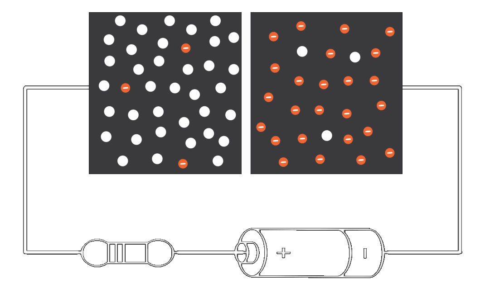

Forward Bias Characteristics of P-N Junction Diode

Identify the P substrate and N substrate
To start, Click the 'Form P-N Junction' button given below
and observe the changes.
To start, Click the 'Form P-N Junction' button given below
and observe the changes.
Now the PN Junction diode is formed and the barrier potential is created.
Switch ON the power supply by clicking the 'Apply voltage' button given below.
Gradually increase the supply voltage from 0V in steps of 0.5 V till 0.65 V by varying the voltage slider and note down the meter readings shown below. Observe the changes happening inside the device.
Now the Applied voltage is greater than the cut-in voltage of the diode and it starts conducting.
Now further increase the supply voltage, the current will increase exponentially.
Voltage across the Diode =
Current Value =
- step 1
- ste2
- step 3